Speicherprogrammierbare Steuerung (SPS)
Schalter vs. Taster
- Ein Schalter behält seine Stellung nach dem Betätigen bei.
- Ein Taster springt in die Ausgangslage
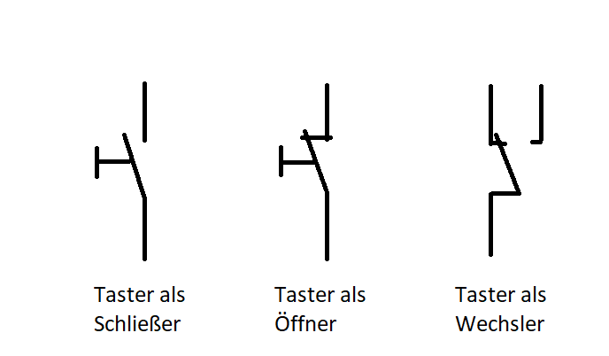
Wahrheitstabelle
- Annahme: Schalter mit zwei Zuständen
| S1 | S2 | H1 |
|---|---|---|
| 0 | 0 | 1 |
| 0 | 1 | 0 |
| 1 | 0 | 0 |
| 1 | 1 | 1 |
- \(H1 = \lnot (S1 \oplus S2)\)
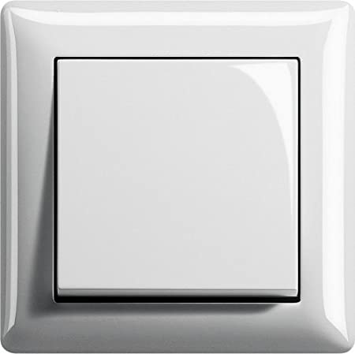
Zustandsdiagramm einer Wechselschaltung

stateDiagram-v2
s1: Licht aus - Schalter 1 = off, Schalter = 2 off
s2: Licht an - Schalter 1 = on, Schalter 2 = off
s3: Licht an - Schalter 1 = off, Schalter 2 = on
s4: Licht aus - Schalter 1 = on, Schalter 2 = on
s1--> s2: Schalter 1 = on
s2--> s1: Schalter 1 = off
s1--> s3: Schalter 2 = on
s3--> s1: Schalter 2 = off
s4--> s3: Schalter 1 = off
s3--> s4: Schalter 1 = on
s2 --> s4: Schalter 2 = on
s4 --> s2: Schalter 2 = off
https://mermaid.live/
Lösung "Industrie 2.0"

- S1, S2: Schalter mit zwei Zuständen
- H1: Glühlampe
Wechselschaltung im Gebäude
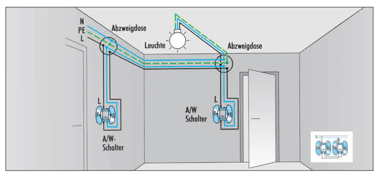
https://cdn-reichelt.de/documents/datenblatt/TIPP/Elektroinstallation(Kopp).pdf
Direkte verbindungsprogrammierte Steuerung
- Steuerung auf Basis des Stomkreises (z.B. Wechselschaltung bei Lichtschalter)
- Überall liegt die hohe (ggf. gefährliche) Spannung an
- Verdrahtungsaufwand (z.B. Kreuzschaltung für mehr als 2 Schalter)
- die Fehlersuche sehr mühselig
- Bestimmte sicherheitsrelevante Funktionen (z. B. Not-Aus)
Lösung "Industrie 2.1"
- Entkopplung von Steuerstrom und Laststromkreis durch Relais oder Schütz
- Steuerstromkreis hat i.d.R. niedrigere Spannung

Verbindungsprogrammierte Steuerung mit logischen Komponenten

- In diesem Fall wird ein Stromstoßschalter verbaut: Bei jeder Betätigung eines der Taster (S) wird der Zustand von K1 gewechselt
- Zwei oder mehrere Schalter S können parallel geschaltet werden
- Verringertet Verdrahtungsaufwand, erhöhte Wartbarkeit
A1-A2: Schließen des Steuerkreises löst eine Sprungfunktion in der Spannung und Strom aus (Flanke)1-2wird geschlossen
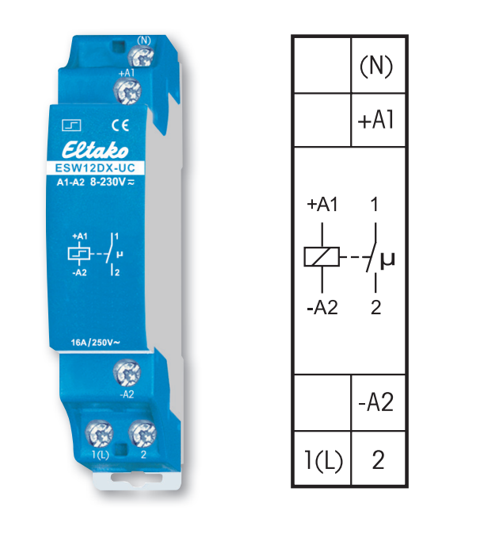
https://de.wikipedia.org/wiki/Liste_der_Schaltzeichen_(Elektrik/Elektronik), https://www.eltako.com/fileadmin/downloads/de/Gesamtkatalog/Eltako_Gesamtkatalog_Kap11_low_res.pdf
A1-A2: Schließen des Steuerkreises löst eine Sprungfunktion in der Spannung und Strom aus (Flanke) *-1-2wird geschlossen
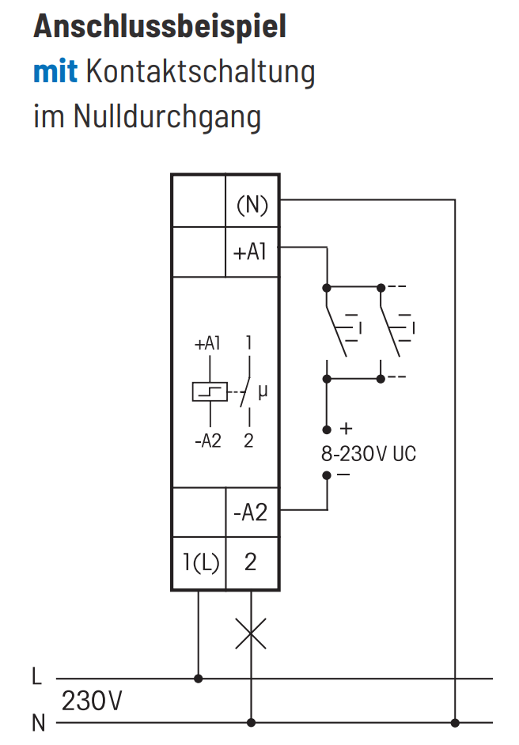
https://de.wikipedia.org/wiki/Liste_der_Schaltzeichen_(Elektrik/Elektronik), https://www.eltako.com/fileadmin/downloads/de/Gesamtkatalog/Eltako_Gesamtkatalog_Kap11_low_res.pdf
Stromstoßschalter
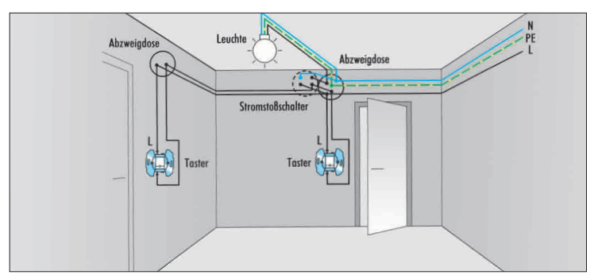
https://cdn-reichelt.de/documents/datenblatt/TIPP/Elektroinstallation(Kopp).pdf
Lösung Industrie 3.0

- Logikbausteine werden durch Computer mit Ein- (
bIn1) und Ausgängen (bOut1) ersetzt - Computer erfasst, ob an Eingängen eine Spannung anliegt
- Computer setzt Spannung auf Ausgänge
def taster(s1,s2,status_lampe): if (s1 or s1): return not(status_lampe) else: return status_lampe bOut1 = stromstossschalter(s1,s2,status_lampe)
Aufbau SPS - Loxone Mini Server
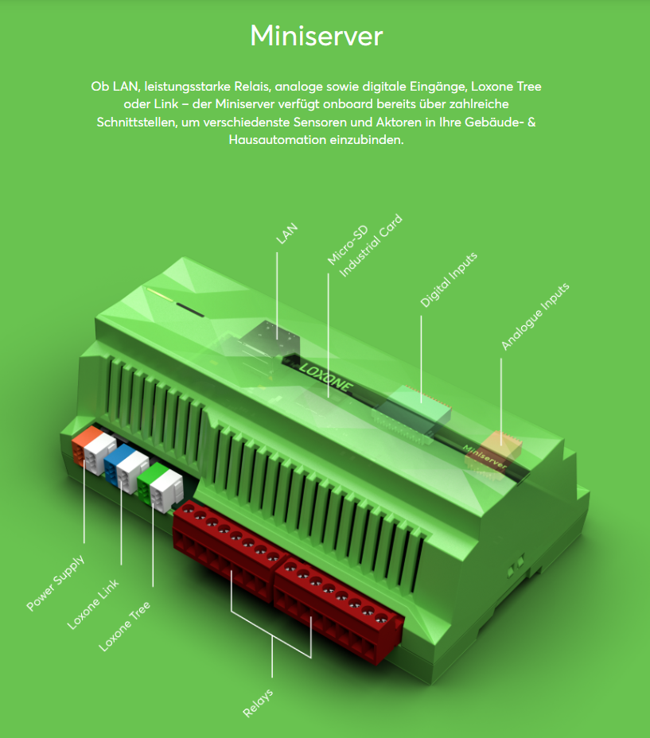
https://www.loxone.com/dede/produkte/gebaeude-und-hausautomation-miniserver/
Aufbau SPS - Siemens Logo

Aufbau SPS - am Beispiel Beckhoff

🧠 Aufbau einer SPS
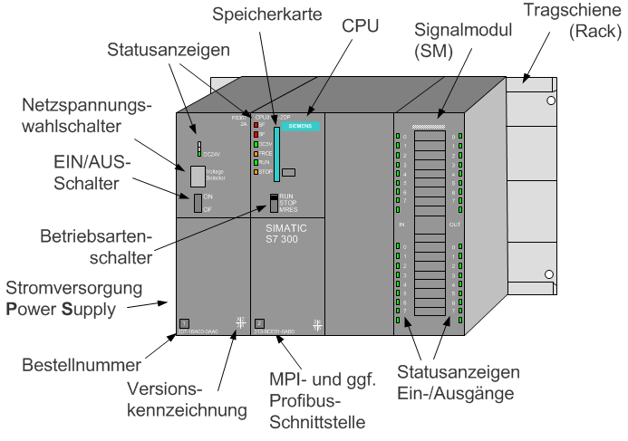
https://www.xplore-dna.net/mod/page/view.php?id=294
- Anbringung meist an Hutschiene (modular)
- Rechen- und Speichereinheit oft Anbindung an Bus-System
- Ein oder mehrere Signalmodule
- Empfang Sensordaten (Eingänge)
- Versand Steuerbefehle (Ausgänge)
Aufbau SPS
- Eingang / Ausgang: Schaltende Verbindungen zwischen 0 und 24V
- Stromversorgung
- Powerkontakt 24V (L+): SPS arbeitet wegen Bauraum und Sicherheit mit 24V Gleichstrom
- Powerkontakt 0V (L-): Masse als 0 Potential für die Schaltung definiert
- Powerkontakt PE: Schutzleiter mit Potential-Erde, 0V sollte auf PE gelegt werden
- Ausgänge
+und-zur weiterverteilung
Industrie 3.0 Zentrale SPS -Speicherprogrammierbare Steuerung
- die Steuerungsfunktionen sind als Programme in einem Speicher enthalten
- Flexibilität: Einfacher Austausch von Programmen
- Mehrere Funktionen auf einem Gerät
- Geringer Platzbedarf, Höhere Zuverlässigkeit, Geringere Kosten
- Vernetzung mit anderen Systemen, Fernwartung
- Fehlerdiagnose
https://www.xplore-dna.net/mod/page/view.php?id=294
Abgrenzung von SPS und Bussystemen
- ⚠️ Die folgende Darstellung vereinfacht und stilisiert
- in der Praxis sind Mischformen üblich
SPS als zentrales System
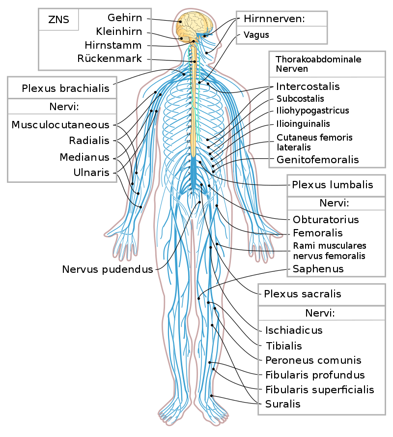
- SPS als Single Point of Failure
- häufig sternförmige Verkabelung
- Ein- und Ausgänge der SPS sind digital (nur zwei Zustände) oder analog
https://de.wikipedia.org/wiki/Nervensystem
Dezentrales System
- Viele Mikrocontroller übernehmen die Steuerungsaufgaben
- kein Single Point of Failure
- andere Topologien als Sternform möglich
- Übermittlung von Seriellen Telegrammen auf der Busleitung
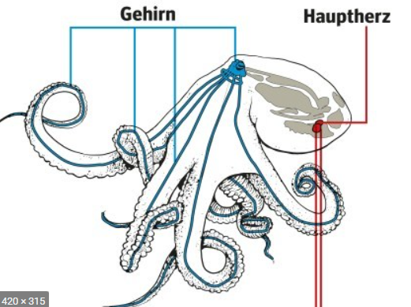
https://quizizz.com/admin/quiz/605a064f172bf7001b1ea35d/tintenfische
Steuerung mit Bus-System

- Zentrale SPS wird durch mehrere dezentrale Contoller ersetzt
- Diese kommunizieren über Telegramme in einem standardtisierten Protokoll miteinander
- Anstelle von binären Schaltinformationen werden Bitfolgen übertragen
- Mischformen sind möglich!
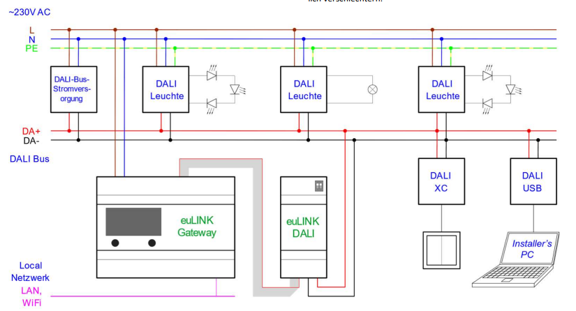
Speicherprogrammierbare Steuerung (SPS)
Messkette: Elektronische Sicht der Steuerung
- Sensoren wandeln den Zustand eines Prozesses in ein elektrisches Signal um
- Die Steuerung und Regelung erfolgt elektronisch oder digital oder in einem rechnergestützten Gerät (Steuerungseinheit)
- Aktoren werden zur Beeinflussung von Systemen eingesetzt

https://mermaid.live/edit#pako:eNp1UMtqw0AM_BWj0wZsQpo-wIeAwZdCQqGGFtrtQXhle4m9a2QtpYT8Tf-kP9ZNg6GlRCdpNBpJc4DaG4Icmt6_1x2yJNtH7ZIY1qxeK3KT57ckyzaxvlJPxJN8ffKeeBExa9aqWJbZMzrTz9C1qoQCcXDtRNZ1ZOXcuFHlsvjLvf2veKeKvXhezEesV6q0rRWMQ8m9G4NcXjPPXD7ht9hDkJMapDAQD2hNtOFwktAgHQ2kIY-poQZDLxq0O0YqBvHVh6shFw6UQhgNCpUWW8YB8gb7KaJkbPxhd7b2x-EURnQv3s-c4zdLjX9a
Steuerungseinheit: Aufbau einer SPS
https://www.xplore-dna.net/mod/page/view.php?id=294
- Anbringung meist an Hutschiene (modular)
- Rechen- und Speichereinheit oft Anbindung an Bus-System
- Ein oder mehrere Signalmodule
- Empfang Sensordaten (Eingänge)
- Versand Steuerbefehle (Ausgänge)
Aufbau SPS
Digitale Ein- und Ausgänge
- kennt nur zwei Zustände (
True/False) - Abgebildet über Spannungslevel oder Stromstärke
https://mermaid.live/edit#pako:eNp1UMtqw0AM_BWj0wZsQpo-wIeAwZdCQqGGFtrtQXhle4m9a2QtpYT8Tf-kP9ZNg6GlRCdpNBpJc4DaG4Icmt6_1x2yJNtH7ZIY1qxeK3KT57ckyzaxvlJPxJN8ffKeeBExa9aqWJbZMzrTz9C1qoQCcXDtRNZ1ZOXcuFHlsvjLvf2veKeKvXhezEesV6q0rRWMQ8m9G4NcXjPPXD7ht9hDkJMapDAQD2hNtOFwktAgHQ2kIY-poQZDLxq0O0YqBvHVh6shFw6UQhgNCpUWW8YB8gb7KaJkbPxhd7b2x-EURnQv3s-c4zdLjX9a
Adressierung
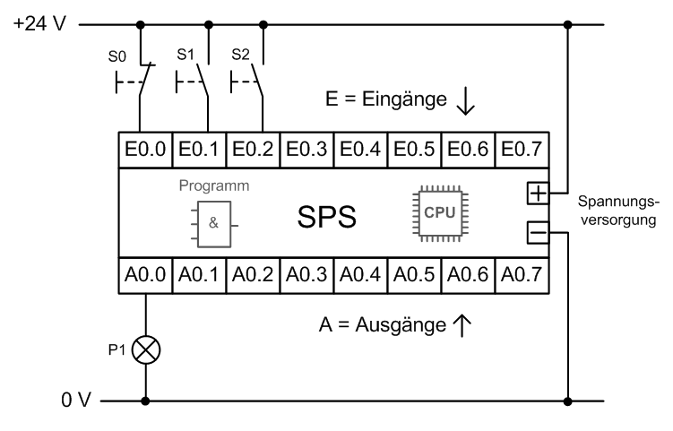
https://www.xplore-dna.net/mod/page/view.php?id=294
- Digitale Ein- und Ausgänge schalten und erfassen Spannungen bis 24V (i.d.R.)
- Jeder digitale Ein- und Ausgang wird durch ein Bit repräsentiert (
True: 24V,False: 0V) - Eingänge werden mit E bzw. I (Input) bezeichnet (
E0.1) - Ausgänge mit A bzw. O/Q (Output)
A0.2
Symbolische Adressierung
-
Zur besseren Verständlichkeit sollten bei der Programmierung sinnvolle Variablennamen eingeführt werden, da diese leichter zu interpretieren sind als z.B.
Q0.1. -
z.B. für ein Automatiklicht
bInAnwesenheitFür Wert des digitalen Sensors für Anwesenheit anE0.0bInDunkelheitFür Wert des digitalen Sensors für Dunkelheit anE0.1bOutLichtFür digitalen Schalter für Licht anA0.1- Das
bsteht für einen binären (digitalen) Ein- oder Ausgang - Das
In/Outfür Ein- oder Ausgänge
Digitale Ein- und Ausgänge
https://mermaid.live/edit#pako:eNp1UMtqw0AM_BWj0wZsQpo-wIeAwZdCQqGGFtrtQXhle4m9a2QtpYT8Tf-kP9ZNg6GlRCdpNBpJc4DaG4Icmt6_1x2yJNtH7ZIY1qxeK3KT57ckyzaxvlJPxJN8ffKeeBExa9aqWJbZMzrTz9C1qoQCcXDtRNZ1ZOXcuFHlsvjLvf2veKeKvXhezEesV6q0rRWMQ8m9G4NcXjPPXD7ht9hDkJMapDAQD2hNtOFwktAgHQ2kIY-poQZDLxq0O0YqBvHVh6shFw6UQhgNCpUWW8YB8gb7KaJkbPxhd7b2x-EURnQv3s-c4zdLjX9a
Digitaler Eingang
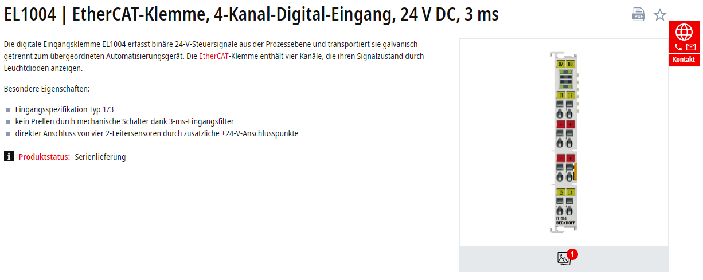
- Kennt nur Signal oder kein Signal (Boolean)
- z.B. Taster
- z.B. Fensterkontakt
EVA-Prinzip
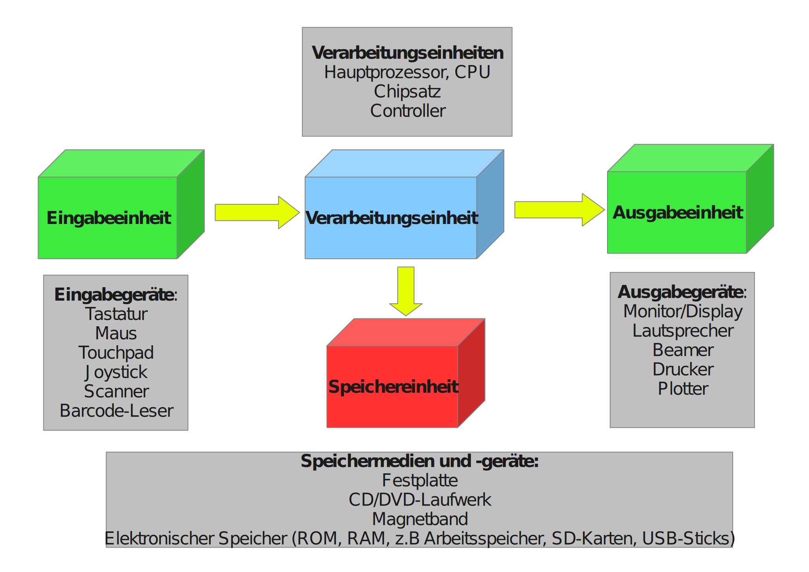
https://upload.wikimedia.org/wikipedia/commons/f/f2/EVA-Prinzip.svg
Zyklische Verarbeitung

- Das EVA-Prinzip wird in regelmäßigen Zyklen durchlaufen
- Einlesen der Eingänge
- Durchführen der Verarbeitung
- Ausgabe der Ausgänge
- Typische Zykluszeiten liegen zwischen einer und zehn Millisekunden
Verarbeitungseinheit - CPU
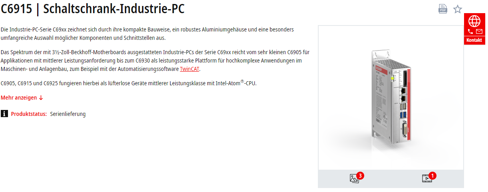
Beckhoff Automation
Analoge Ein- und Ausgänge
https://mermaid.live/edit#pako:eNp1UMtqw0AM_BWj0wZsQpo-wIeAwZdCQqGGFtrtQXhle4m9a2QtpYT8Tf-kP9ZNg6GlRCdpNBpJc4DaG4Icmt6_1x2yJNtH7ZIY1qxeK3KT57ckyzaxvlJPxJN8ffKeeBExa9aqWJbZMzrTz9C1qoQCcXDtRNZ1ZOXcuFHlsvjLvf2veKeKvXhezEesV6q0rRWMQ8m9G4NcXjPPXD7ht9hDkJMapDAQD2hNtOFwktAgHQ2kIY-poQZDLxq0O0YqBvHVh6shFw6UQhgNCpUWW8YB8gb7KaJkbPxhd7b2x-EURnQv3s-c4zdLjX9a
Analog-Digital Wandler
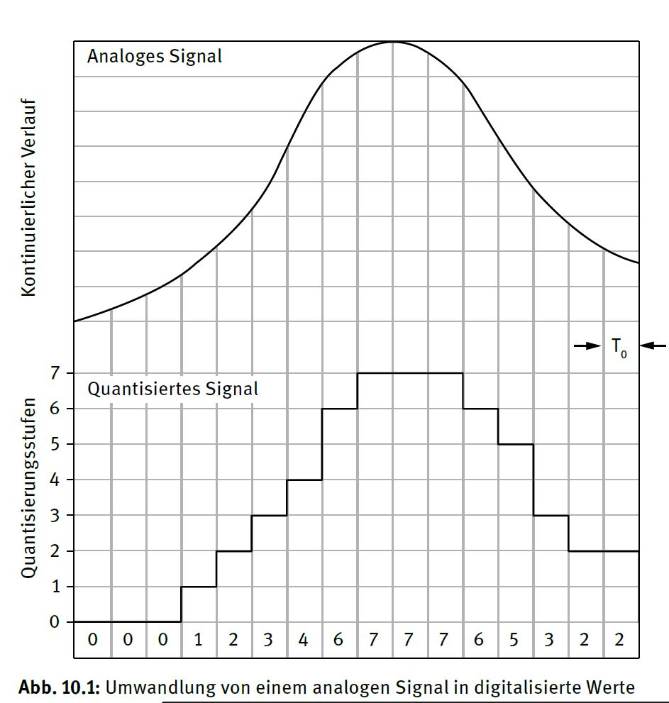
- Vorsicht: Auch analoge Signale werden beim Eingang in die Verarbeitungseinheit digitalisiert
- Die Auflösung analoger Ein- und Ausgänge wird in Bit angegeben
Analoger Eingang
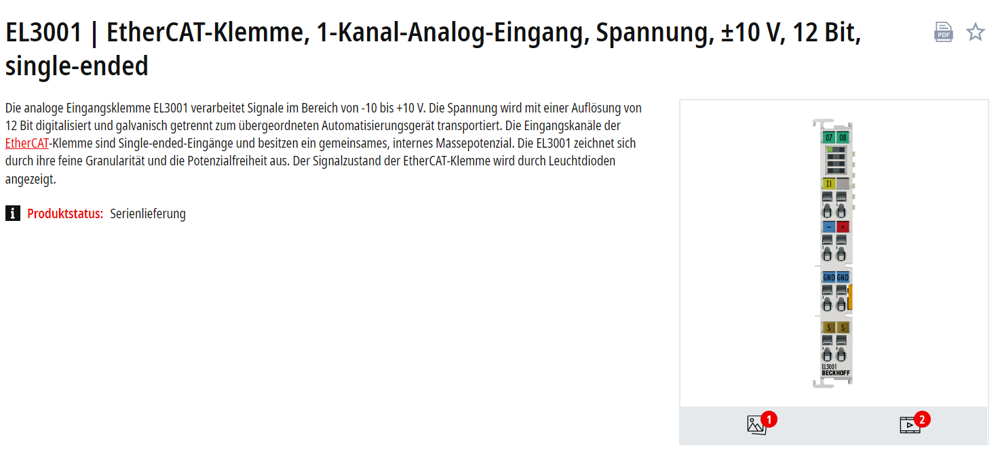
- bei vielen Anwendungsfällen sind stetige Werte von Interesse:
- z.B. Temperatur, Helligkeit, etc.
Passive Analoge Signale
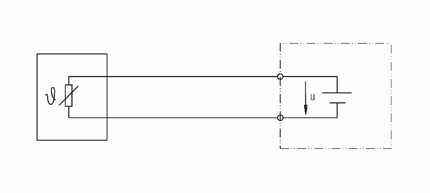
- Nutzen Temperaturabhängigkeit eines Widerstands
- und Ohmsches Gesetz: \(U=RI\)
- Bei gleicher angelegter Spannung, wird temperaturabhängig ein anderer Strom gemessen
https://blog.wika.de/know-how/pt100-in-2-3-oder-4-leiter-schaltung/
z.B. PT-Widerstände
- Platin hat ein relativ lineares Verhalten
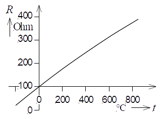
- \(U = 24 V\)
- \(I_m=0.16 A\)
- \(R=\frac{U}{I_m}=150 \Omega\)
- \(T \approx 100°C\)
- Sollten wir den PT-Widerstand direkt mit \(24 V\) beaufschlagen?
Kennlinie eines Pt100 (100 \(\Omega\) bei 0 °C)
Einsatzgebiete von Verstärkern
https://mermaid.live/edit#pako:eNp1UMtqw0AM_BWj0wZsQpo-wIeAwZdCQqGGFtrtQXhle4m9a2QtpYT8Tf-kP9ZNg6GlRCdpNBpJc4DaG4Icmt6_1x2yJNtH7ZIY1qxeK3KT57ckyzaxvlJPxJN8ffKeeBExa9aqWJbZMzrTz9C1qoQCcXDtRNZ1ZOXcuFHlsvjLvf2veKeKvXhezEesV6q0rRWMQ8m9G4NcXjPPXD7ht9hDkJMapDAQD2hNtOFwktAgHQ2kIY-poQZDLxq0O0YqBvHVh6shFw6UQhgNCpUWW8YB8gb7KaJkbPxhd7b2x-EURnQv3s-c4zdLjX9a
- Linearisierung des Signals
- Anpassung des Signals auf definierten Ausgangsbereich (z.B. 0 .. 20mA, 0 .. 10V)
- Extra Kosten
- Sensorspezifisch
Aktive Sensoren
- Integriert Sensor und Verstärker
- Sensor wird mit Spannung versorgt (i.d.R. 24V/DC)
- Sensor übersetzt physikalische Größe in ein Ausgangssignal \(E\)
- Skalierung häufig linear oder sogar proportional
- \(U(E_v)=E_0 + K_p \cdot E_v\)
- \(U(E_v)=\frac{10 V}{100.000 Lux} \cdot E_v\)
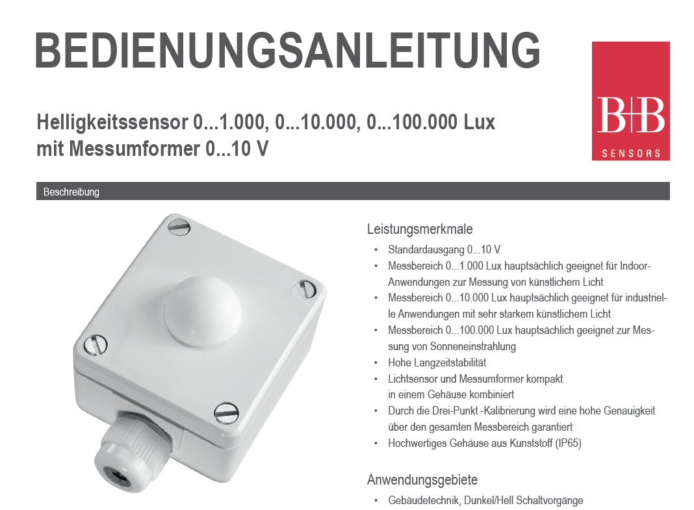
Anschluss aktiver Sensoren
- Spannungsversorgung über
GNDund24 V - Ausgang
LUXwird mit analogem Eingang der SPS verbunden 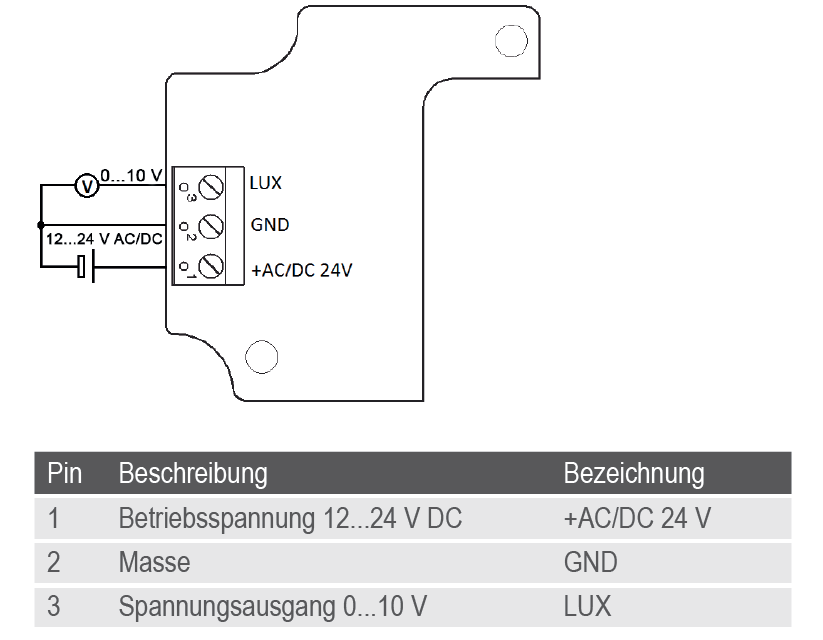
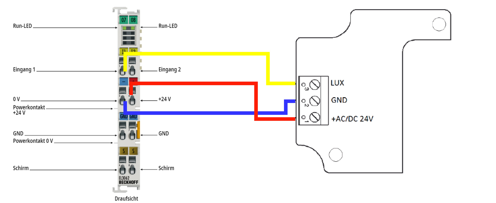
Auswahl Analoger Eingänge
- Spannungssignal: z.B. \(0...10\) bzw. \(-10...10\) V
- günstig
- leicht zu messen (z.B. mit Multimeter)
- Stromschnittstelle: z.B. 4...20 mA
- auch bei langen Leitungen
- unanfälliger gegen Störungen
- Erkennen von Drahtbruch (0 A)
- PT-Eingänge: Spezielle Eingänge zum Anschluss von PT-Widerständen
https://www.beckhoff.com/de-at/produkte/i-o/ethercat-klemmen/el3xxx-analog-eingang/
🤓 Anzahl der Leiter
- Es gibt Sensoren mit 2, 3, 4 Leitern
- Zunehmende Messgenauigkeit (Einfluss des Leiterwiderstands kann herausgerechnet werden) 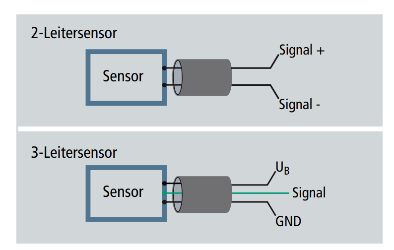
Signalformen
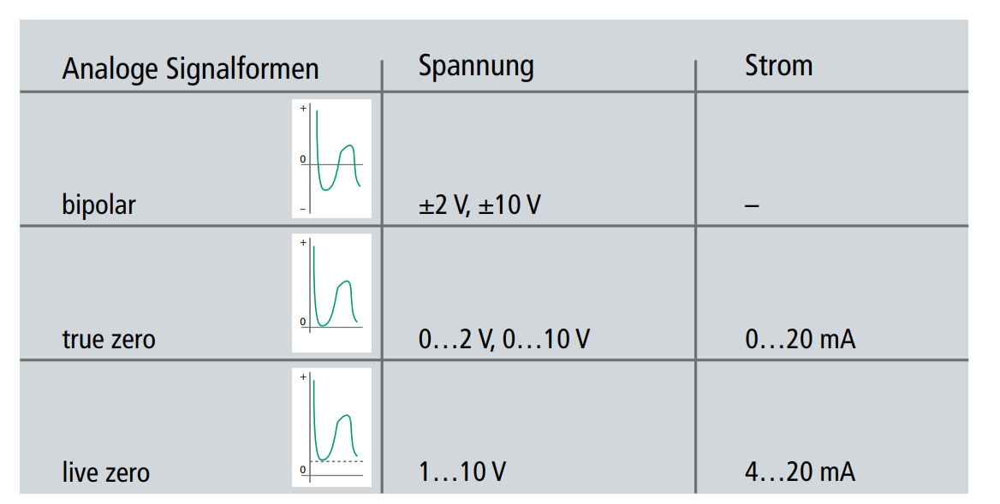
- live zero lässt Kabelbruch erkennen
https://download.beckhoff.com/download/document/Application_Notes/DK9221-1111-0059.pdf
🤓 Single-Ended vs. Differential
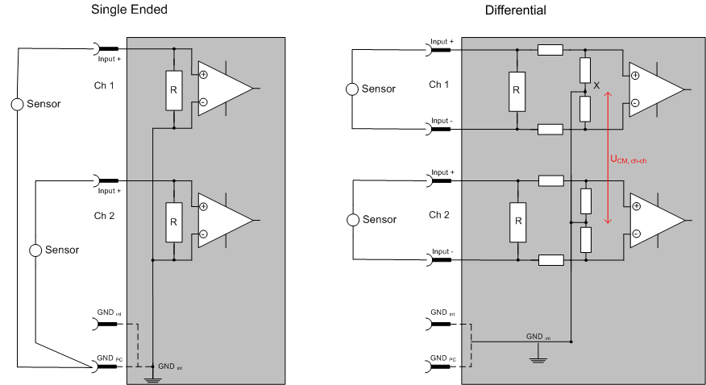
- Single-Ended: alle Sensoren liegen auf dem gleichen V- Potential (nur ein Kabel zurück)
- Differential: jeder Sensor hat sein eigenes V- Potential (weniger Störanfällig)
https://infosys.beckhoff.com/index.php?content=../content/1031/ep3356/1668832651.html&id=
Analog-Digital-Wandlung
Analog-Digital-Wandlung
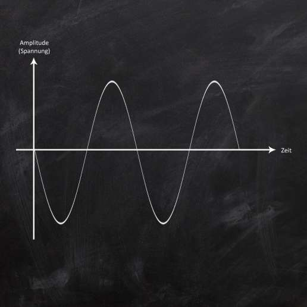
- Signalform:
- Spannung
- bipolar
- SPS kann nur diskrete Werte darstellen
- Wie hoch ist die Zykluszeit der SPS?
- Wie viel Bit stehen zur Speicherung eines Wertes zu Verfügung?
https://chrishoermann.at/analog-digital-wandlung-digital-analog-wandlung/
Abtastung (Sample rate)
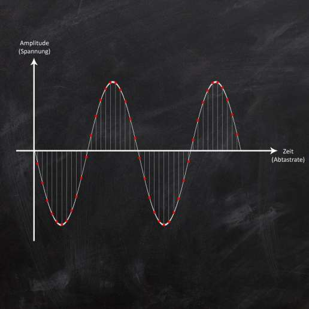
- i.d.R. Zykluszeit der SPS
- ein Wert pro Zyklus z.B. 10 ms
| T in ms | Beleuchtungsstärke in Lux |
|---|---|
| 0 | 0 |
| 10 | 50000 |
https://chrishoermann.at/analog-digital-wandlung-digital-analog-wandlung/
Digitalisierung (resolution)
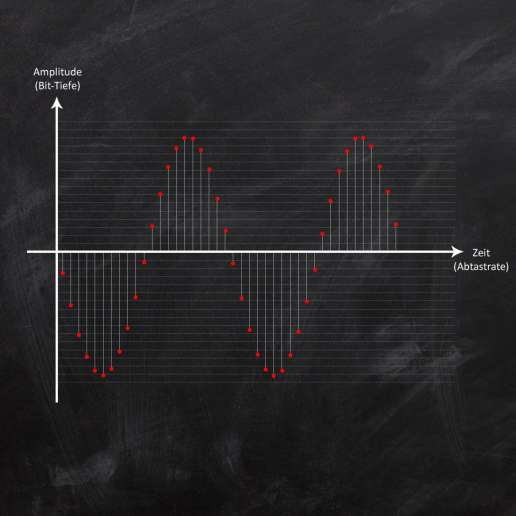
https://chrishoermann.at/analog-digital-wandlung-digital-analog-wandlung/
- Wie viele Spannungswerte kann der Eingang unterscheiden (resolution)
- Angabe auf der Klemme: 12 Bit verteilt auf \(-0-..10\) V
- \(2^{12} = 4096\) Zustände
| T in ms | Beleuchtungsstärke in Lux am Sensor | Spannung in V nach Verstärker | Eingangswert als Integer am A/D-Wandler | Beleuchtungsstärke in Lux in der Steuerungseinheit |
|---|---|---|---|---|
| 0 | 0 | 0 | 0 | 0 |
| 10 | 50000 | 5 | 2047 | 50000 |
https://mermaid.live/edit#pako:eNp1UMtqw0AM_BWj0wZsQpo-wIeAwZdCQqGGFtrtQXhle4m9a2QtpYT8Tf-kP9ZNg6GlRCdpNBpJc4DaG4Icmt6_1x2yJNtH7ZIY1qxeK3KT57ckyzaxvlJPxJN8ffKeeBExa9aqWJbZMzrTz9C1qoQCcXDtRNZ1ZOXcuFHlsvjLvf2veKeKvXhezEesV6q0rRWMQ8m9G4NcXjPPXD7ht9hDkJMapDAQD2hNtOFwktAgHQ2kIY-poQZDLxq0O0YqBvHVh6shFw6UQhgNCpUWW8YB8gb7KaJkbPxhd7b2x-EURnQv3s-c4zdLjX9a
Digitalsignal
- Nach der Umwandlung im Speicher der SPS
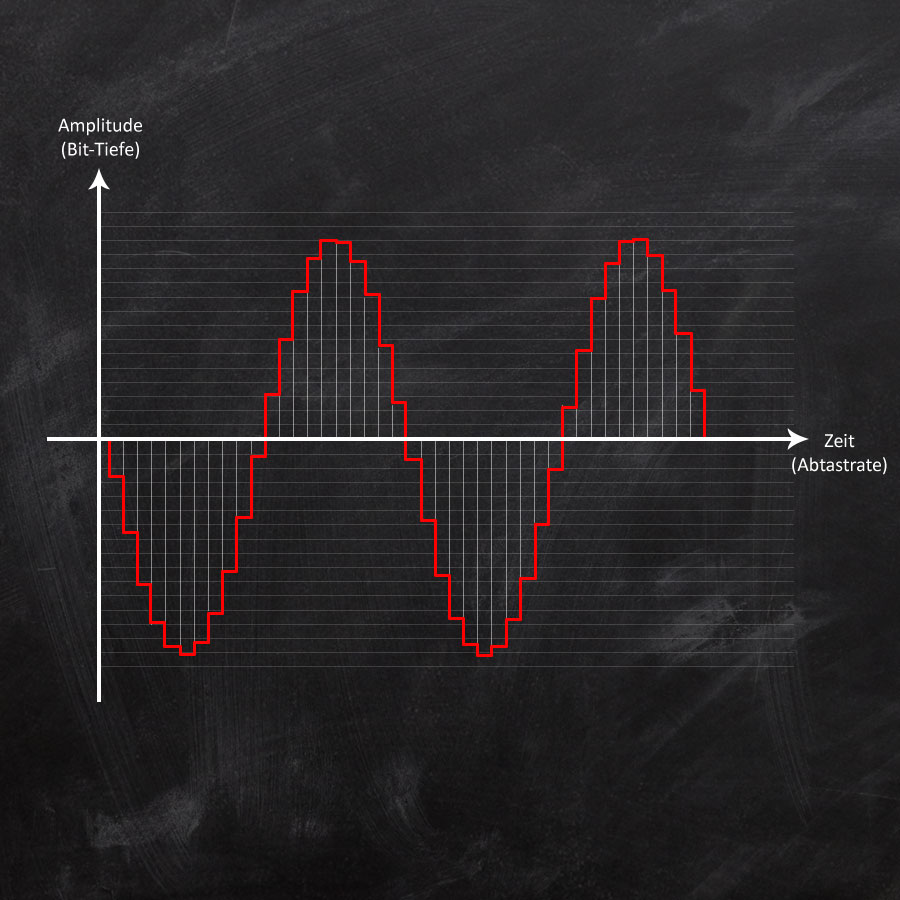
https://chrishoermann.at/analog-digital-wandlung-digital-analog-wandlung/
| T in ms | Beleuchtungsstärke in Lux |
|---|---|
| 0 | 0 |
| 10 | 50000 |
✍️ Aufgabe 4_1_1: Anbindung eines Helligkeitssensors
- Ein Helligkeitssensor bildet die gemessenen Helligkeitswerte über ein analoges Signal \(0...10 \text{ V}\) ab
- Die Eingangsschnittstelle verfügt über eine Auflösung von 12 Bit
- Wie viele diskrete Helligkeitsstufen gibt es?
- Was ist der kleinste Spannungsunterschied, der unterschieden werden kann?
Analoger Eingang
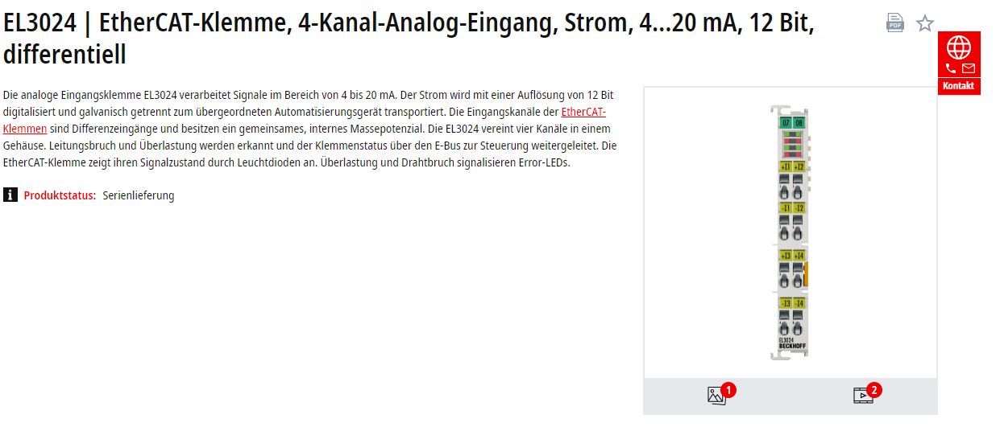
- Signal ist eine Stromstärke (4...20mA)
- Signal wird in 12 Bit digitalisiert
- z.B. Lichtsensor
Beispiele für analoge und digitale Signale
| Eingang | Ausgang | |
|---|---|---|
| Digital | Taster, ... | Kontrollleuchte, ... |
| Analog | Temperaturfühler, ... | Elektromotor, ... |
✍️ Aufgabe 4_1_2:
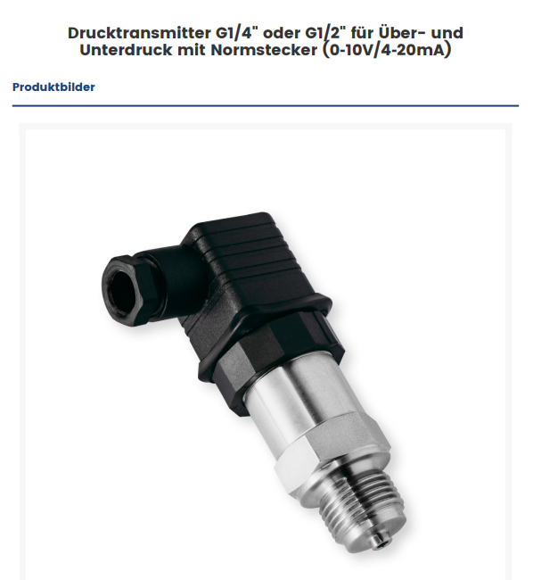
- In einer Lüftungsanlage soll ein Drucksensor (Druckbereich 0-10 bar) mit einem verbaut werden
- Wichtig ist hierbei, dass ein Drahtbruch sofort erkannt wird
- Welches Sensorsignal wählen Sie?
- Welche Klemme wählen Sie?
- Was ist die kleinste Druckdifferenz, die Sie an der SPS erfassen können?
- Zeichen Sie, wie sie den Sensor anschließen würden
https://www.sensorshop24.de/productpdf/download/file/id/1009/name/Drucktransmitter_G14%2522_oder_G12%2522_f%25C3%25BCr_%25C3%259Cber-und_Unterdruck_mit_Normstecker%25280%25E2%2580%259110V4%25E2%2580%259120mA%2529.pdf/
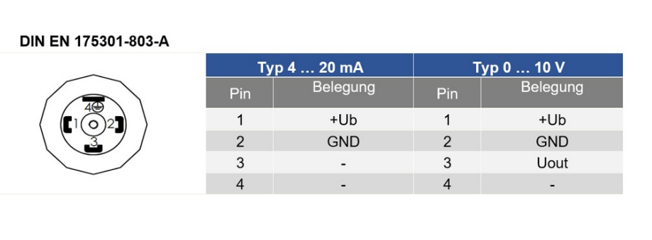
Übersicht Klemmen
Lösung
- mit einem Stromsignal (4...20mA) kann ein Drahtbruch sicher erkannt werden
- Entsprechende Klemme z.B. EL3021 | EtherCAT-Klemme, 1-Kanal-Analog-Eingang, Strom, 4…20 mA, 12 Bit, differentiell
- Single-Ended wäre ebenfalls möglich
- mehre Eingänge wäre ebenfalls möglich
- kleinster möglicher Druckunterschied
- 12 Bit sind \(2^{12}=4096\) mögliche Zustände
- Der Messbereich liegt zwischen 0-10 bar
- \(\Delta P_{min}=\frac{P_{max}-P_{min}}{n}=\frac{10-0 bar}{4096}=2.44 \text{ mbar}\)
EL3051
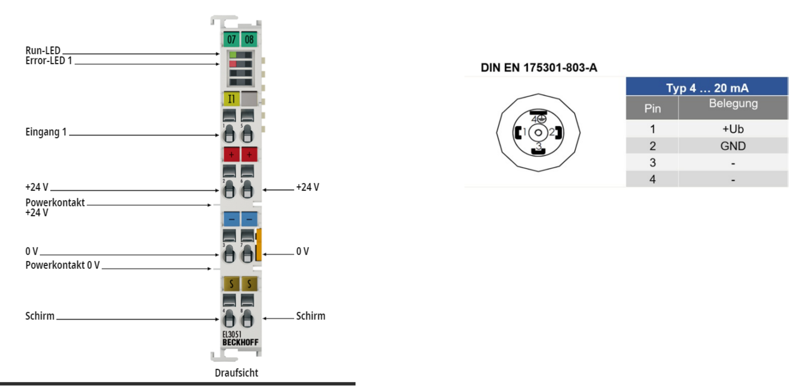
Lösung EL3051 - single-ended
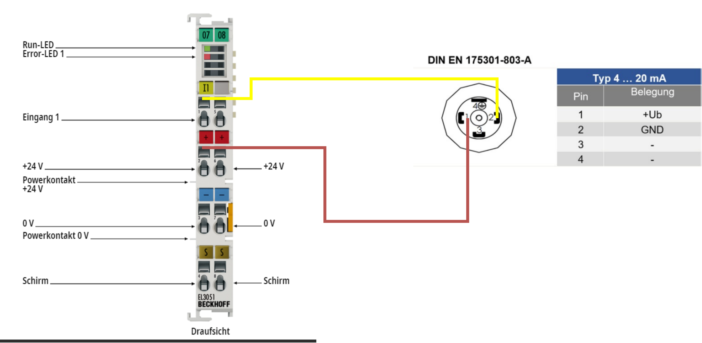

https://download.beckhoff.com/download/Document/io/ethercat-terminals/el30xxde.pdf
Lösung EL3021 - differentiell
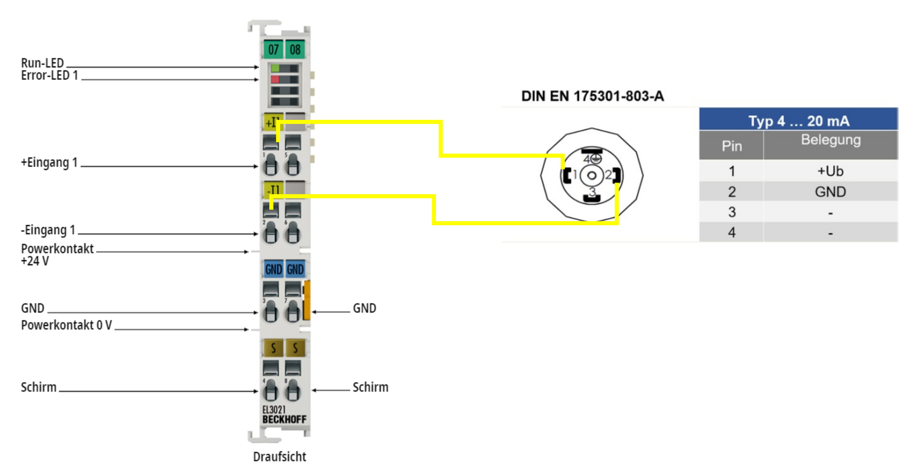
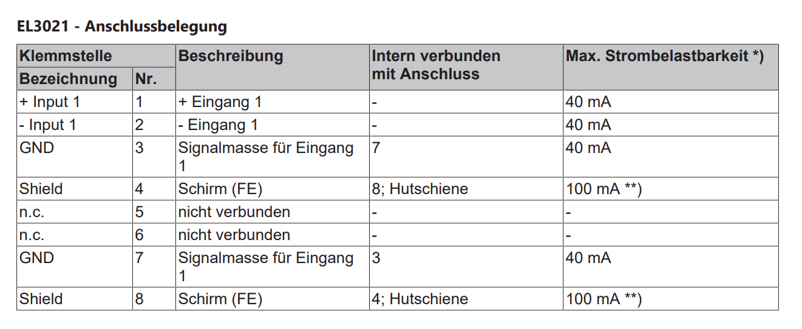
https://download.beckhoff.com/download/Document/io/ethercat-terminals/el30xxde.pdf
Ausgänge
- Für Digitale und Analoge Ausgänge gelten sie selben Prinzipien
🎯 Lernfortschritt
Nach dieser Einheit sind Sie in der Lage dazu - zwischen digitalen und analogen Ein- und Ausgängen zu unterscheiden - geeignete Ein- und Ausgänge zu Sensoren auszuwählen - und anzuschließen